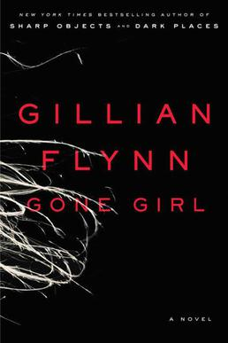
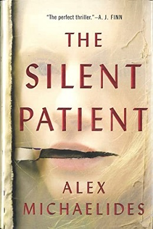
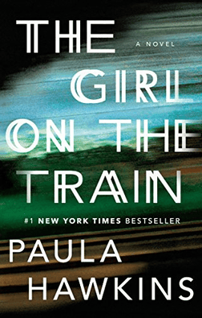
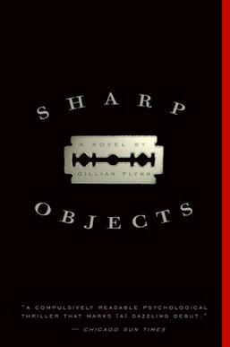
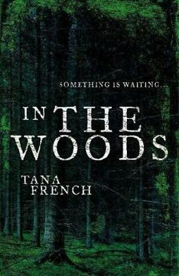

Book Recommendations

Gone Girl
On their fifth wedding anniversary, Nick's wife Amy disappears. As the police digs deeper, secrets and lies unravel on both sides of this twisted marriage.

The Silent Patient
A famous painter shoots her husband and then never speaks another word. A criminal psychotherapist becomes obsessed with uncovering the truth behind her silence.

The Girl On The Train
Every day on her commute, Rachel watches a couple from the train. Then she sees something shocking, and finds herself tangled in a missing persons inverstigation.

Sharp Objects
A reporter returns to her hometown to cover the murders of two young girls, and is pulled back into the dark, tangled relationships of her own family.

In The Woods
A detective investigating a child's murder finds the case eerily connected to his own unresolved childhood trauma from the same woods, decades earlier.